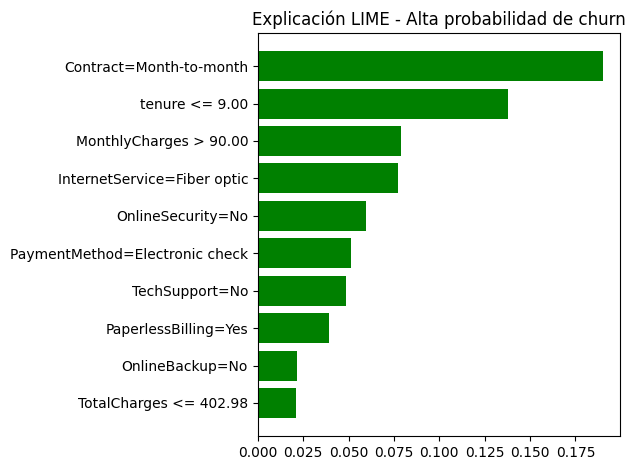
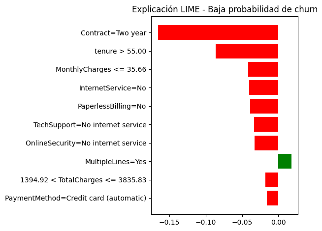
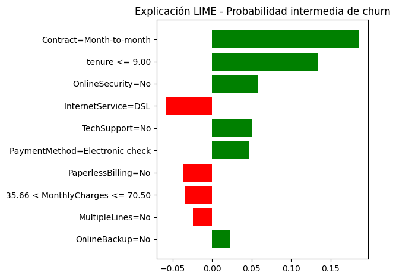

Proyecto Integrador 5.12 — Capítulo 5: Árboles e Interpretabilidad#
Notebook 3: Interpretabilidad Local con LIME#
Asignatura: Machine Learning Proyecto: Predicción de Churn en Telecomunicaciones Método: LIME (Local Interpretable Model-agnostic Explanations) Fecha: 2025
Objetivo del Notebook#
Este notebook implementa el análisis de interpretabilidad local del modelo XGBoost entrenado en el Notebook 2. La interpretabilidad es un componente esencial en aplicaciones de Machine Learning empresarial, ya que permite:
Comprender las decisiones individuales del modelo más allá de su desempeño global.
Generar confianza en las predicciones por parte de stakeholders no técnicos.
Identificar factores accionables para intervenciones de retención personalizadas.
Detectar potenciales sesgos o comportamientos inesperados del modelo.
Se utiliza LIME (Local Interpretable Model-agnostic Explanations, Ribeiro et al., 2016), que aproxima localmente el comportamiento del modelo complejo (XGBoost) con un modelo lineal interpretable en la vecindad de cada instancia a explicar. LIME es agnóstico al modelo: funciona con cualquier clasificador de caja negra sin acceso a su estructura interna.
Tres perfiles analizados:
Cliente con alta probabilidad de churn (verdadero positivo, prob ≈ 0.89).
Cliente con baja probabilidad de churn (verdadero negativo, prob ≈ 0.01).
Cliente con probabilidad intermedia (caso límite, prob ≈ 0.50).
Análisis del Cliente con Alta Probabilidad de Churn#
Este perfil representa el segmento de máxima prioridad para las acciones de retención empresarial. La alta probabilidad estimada (≈88%) indica que el modelo detecta múltiples señales de riesgo en simultáneo.
Las variables que LIME identifica como más influyentes en esta predicción son coherentes con los hallazgos del EDA y la importancia global del modelo:
Contrato mensual: la ausencia de un compromiso contractual de largo plazo elimina la fricción de cancelación, facilitando el abandono.
Baja antigüedad: clientes con pocos meses de permanencia no han desarrollado un vínculo de lealtad suficiente y son más sensibles a ofertas competidoras.
Ausencia de servicios de soporte: sin soporte técnico ni seguridad en línea, el cliente percibe menos valor en el paquete contratado.
Servicio de fibra óptica: aunque este servicio es más rápido, su mayor costo puede generar insatisfacción si la calidad percibida no justifica el precio premium.
Recomendación de negocio: intervención urgente con oferta de migración a contrato anual con descuento, incorporación gratuita de soporte técnico por 3 meses y revisión de la percepción de calidad del servicio de fibra óptica.
import pandas as pd
import numpy as np
import matplotlib.pyplot as plt
from pathlib import Path
import joblib
import json
import warnings
warnings.filterwarnings("ignore")
from sklearn.model_selection import train_test_split
from lime.lime_tabular import LimeTabularExplainer
pd.set_option("display.max_columns", None)
pd.set_option("display.max_rows", 100)
BASE_DIR = Path.cwd().parent if Path.cwd().name == "notebooks" else Path.cwd()
DATA_PATH = BASE_DIR / "data" / "processed" / "telco_churn_clean.csv"
MODEL_PATH = BASE_DIR / "models" / "best_model.joblib"
METADATA_PATH = BASE_DIR / "models" / "model_metadata.json"
df = pd.read_csv(DATA_PATH)
model = joblib.load(MODEL_PATH)
with open(METADATA_PATH, "r", encoding="utf-8") as f:
metadata = json.load(f)
df.head()
| customerID | gender | SeniorCitizen | Partner | Dependents | tenure | PhoneService | MultipleLines | InternetService | OnlineSecurity | OnlineBackup | DeviceProtection | TechSupport | StreamingTV | StreamingMovies | Contract | PaperlessBilling | PaymentMethod | MonthlyCharges | TotalCharges | Churn | |
|---|---|---|---|---|---|---|---|---|---|---|---|---|---|---|---|---|---|---|---|---|---|
| 0 | 7590-VHVEG | Female | 0 | Yes | No | 1 | No | No phone service | DSL | No | Yes | No | No | No | No | Month-to-month | Yes | Electronic check | 29.85 | 29.85 | No |
| 1 | 5575-GNVDE | Male | 0 | No | No | 34 | Yes | No | DSL | Yes | No | Yes | No | No | No | One year | No | Mailed check | 56.95 | 1889.50 | No |
| 2 | 3668-QPYBK | Male | 0 | No | No | 2 | Yes | No | DSL | Yes | Yes | No | No | No | No | Month-to-month | Yes | Mailed check | 53.85 | 108.15 | Yes |
| 3 | 7795-CFOCW | Male | 0 | No | No | 45 | No | No phone service | DSL | Yes | No | Yes | Yes | No | No | One year | No | Bank transfer (automatic) | 42.30 | 1840.75 | No |
| 4 | 9237-HQITU | Female | 0 | No | No | 2 | Yes | No | Fiber optic | No | No | No | No | No | No | Month-to-month | Yes | Electronic check | 70.70 | 151.65 | Yes |
print("Modelo cargado correctamente:")
print(model)
print("\nMetadatos:")
metadata
Modelo cargado correctamente:
Pipeline(steps=[('preprocessor',
ColumnTransformer(transformers=[('num',
Pipeline(steps=[('imputer',
SimpleImputer(strategy='median')),
('scaler',
StandardScaler())]),
['SeniorCitizen', 'tenure',
'MonthlyCharges',
'TotalCharges']),
('cat',
Pipeline(steps=[('imputer',
SimpleImputer(strategy='most_frequent')),
('onehot',
OneHotEncoder(handle_unknown='ignore'))]),
[...
feature_types=None, feature_weights=None,
gamma=None, grow_policy=None,
importance_type=None,
interaction_constraints=None, learning_rate=0.05,
max_bin=None, max_cat_threshold=None,
max_cat_to_onehot=None, max_delta_step=None,
max_depth=3, max_leaves=None,
min_child_weight=None, missing=nan,
monotone_constraints=None, multi_strategy=None,
n_estimators=100, n_jobs=-1,
num_parallel_tree=None, ...))])
Metadatos:
{'best_model_name': 'XGBoost',
'target': 'Churn',
'target_mapping': {'No': 0, 'Yes': 1},
'numeric_features': ['SeniorCitizen',
'tenure',
'MonthlyCharges',
'TotalCharges'],
'categorical_features': ['gender',
'Partner',
'Dependents',
'PhoneService',
'MultipleLines',
'InternetService',
'OnlineSecurity',
'OnlineBackup',
'DeviceProtection',
'TechSupport',
'StreamingTV',
'StreamingMovies',
'Contract',
'PaperlessBilling',
'PaymentMethod'],
'features_used': ['gender',
'SeniorCitizen',
'Partner',
'Dependents',
'tenure',
'PhoneService',
'MultipleLines',
'InternetService',
'OnlineSecurity',
'OnlineBackup',
'DeviceProtection',
'TechSupport',
'StreamingTV',
'StreamingMovies',
'Contract',
'PaperlessBilling',
'PaymentMethod',
'MonthlyCharges',
'TotalCharges'],
'selection_metric': 'test_roc_auc'}
target = metadata["target"]
X = df.drop(columns=[target])
y = df[target].map(metadata["target_mapping"])
if "customerID" in X.columns:
customer_ids = X["customerID"].copy()
X = X.drop(columns=["customerID"])
else:
customer_ids = None
X.head()
| gender | SeniorCitizen | Partner | Dependents | tenure | PhoneService | MultipleLines | InternetService | OnlineSecurity | OnlineBackup | DeviceProtection | TechSupport | StreamingTV | StreamingMovies | Contract | PaperlessBilling | PaymentMethod | MonthlyCharges | TotalCharges | |
|---|---|---|---|---|---|---|---|---|---|---|---|---|---|---|---|---|---|---|---|
| 0 | Female | 0 | Yes | No | 1 | No | No phone service | DSL | No | Yes | No | No | No | No | Month-to-month | Yes | Electronic check | 29.85 | 29.85 |
| 1 | Male | 0 | No | No | 34 | Yes | No | DSL | Yes | No | Yes | No | No | No | One year | No | Mailed check | 56.95 | 1889.50 |
| 2 | Male | 0 | No | No | 2 | Yes | No | DSL | Yes | Yes | No | No | No | No | Month-to-month | Yes | Mailed check | 53.85 | 108.15 |
| 3 | Male | 0 | No | No | 45 | No | No phone service | DSL | Yes | No | Yes | Yes | No | No | One year | No | Bank transfer (automatic) | 42.30 | 1840.75 |
| 4 | Female | 0 | No | No | 2 | Yes | No | Fiber optic | No | No | No | No | No | No | Month-to-month | Yes | Electronic check | 70.70 | 151.65 |
X_train, X_test, y_train, y_test = train_test_split(
X,
y,
test_size=0.20,
random_state=42,
stratify=y
)
print("X_train:", X_train.shape)
print("X_test:", X_test.shape)
print("y_train:", y_train.shape)
print("y_test:", y_test.shape)
X_train: (5634, 19)
X_test: (1409, 19)
y_train: (5634,)
y_test: (1409,)
y_proba = model.predict_proba(X_test)[:, 1]
y_pred = model.predict(X_test)
predictions_df = X_test.copy()
predictions_df["real_churn"] = y_test.values
predictions_df["predicted_churn"] = y_pred
predictions_df["churn_probability"] = y_proba
predictions_df[["real_churn", "predicted_churn", "churn_probability"]].head()
| real_churn | predicted_churn | churn_probability | |
|---|---|---|---|
| 437 | 0 | 0 | 0.034392 |
| 2280 | 0 | 1 | 0.751554 |
| 2235 | 0 | 0 | 0.065115 |
| 4460 | 0 | 0 | 0.337811 |
| 3761 | 0 | 0 | 0.023602 |
3. Selección de Casos Representativos#
Se seleccionan tres instancias representativas del conjunto de prueba:
Alta probabilidad de churn: el cliente con la mayor probabilidad predicha de abandono, idealmente un verdadero positivo (churn real = 1, predicción = 1).
Baja probabilidad de churn: el cliente con la menor probabilidad predicha, idealmente un verdadero negativo (churn real = 0, predicción = 0).
Probabilidad intermedia: el cliente más cercano a la probabilidad 0.5, es decir, el caso límite donde el modelo presenta mayor incertidumbre. Este es el más valioso desde el punto de vista de intervención, pues una pequeña mejora en su situación podría cambiar la predicción.
idx_high_churn = np.argmax(y_proba)
idx_low_churn = np.argmin(y_proba)
idx_mid_churn = np.argmin(np.abs(y_proba - 0.50))
selected_positions = {
"Alta probabilidad de churn": idx_high_churn,
"Baja probabilidad de churn": idx_low_churn,
"Probabilidad intermedia de churn": idx_mid_churn
}
selected_cases = []
for case_name, position in selected_positions.items():
selected_cases.append({
"caso": case_name,
"posicion_en_X_test": position,
"indice_original": X_test.index[position],
"churn_real": y_test.iloc[position],
"prediccion": y_pred[position],
"probabilidad_churn": y_proba[position]
})
selected_cases_df = pd.DataFrame(selected_cases)
selected_cases_df
| caso | posicion_en_X_test | indice_original | churn_real | prediccion | probabilidad_churn | |
|---|---|---|---|---|---|---|
| 0 | Alta probabilidad de churn | 1090 | 3380 | 1 | 1 | 0.888182 |
| 1 | Baja probabilidad de churn | 475 | 6423 | 0 | 0 | 0.010539 |
| 2 | Probabilidad intermedia de churn | 1186 | 779 | 1 | 1 | 0.500128 |
Casos seleccionados para interpretación#
Se seleccionan tres clientes representativos con base en la probabilidad estimada de churn:
Un cliente con alta probabilidad de abandono.
Un cliente con baja probabilidad de abandono.
Un cliente con probabilidad cercana a 0.50, donde la decisión del modelo es menos evidente.
Estos casos permiten analizar cómo el modelo toma decisiones en diferentes escenarios.
numeric_features = metadata["numeric_features"]
categorical_features = metadata["categorical_features"]
feature_names = X.columns.tolist()
categorical_indices = [
feature_names.index(col)
for col in categorical_features
]
X_train_lime = X_train.copy()
X_test_lime = X_test.copy()
category_maps = {}
inverse_category_maps = {}
for col in categorical_features:
categories = sorted(X_train_lime[col].dropna().unique().tolist())
category_maps[col] = {category: idx for idx, category in enumerate(categories)}
inverse_category_maps[col] = {idx: category for category, idx in category_maps[col].items()}
X_train_lime[col] = X_train_lime[col].map(category_maps[col])
X_test_lime[col] = X_test_lime[col].map(category_maps[col])
X_train_lime = X_train_lime.astype(float)
X_test_lime = X_test_lime.astype(float)
X_train_lime.head()
| gender | SeniorCitizen | Partner | Dependents | tenure | PhoneService | MultipleLines | InternetService | OnlineSecurity | OnlineBackup | DeviceProtection | TechSupport | StreamingTV | StreamingMovies | Contract | PaperlessBilling | PaymentMethod | MonthlyCharges | TotalCharges | |
|---|---|---|---|---|---|---|---|---|---|---|---|---|---|---|---|---|---|---|---|
| 3738 | 1.0 | 0.0 | 0.0 | 0.0 | 35.0 | 0.0 | 1.0 | 0.0 | 0.0 | 0.0 | 2.0 | 0.0 | 2.0 | 2.0 | 0.0 | 0.0 | 2.0 | 49.20 | 1701.65 |
| 3151 | 1.0 | 0.0 | 1.0 | 1.0 | 15.0 | 1.0 | 0.0 | 1.0 | 2.0 | 0.0 | 0.0 | 0.0 | 0.0 | 0.0 | 0.0 | 0.0 | 3.0 | 75.10 | 1151.55 |
| 4860 | 1.0 | 0.0 | 1.0 | 1.0 | 13.0 | 0.0 | 1.0 | 0.0 | 2.0 | 2.0 | 0.0 | 2.0 | 0.0 | 0.0 | 2.0 | 0.0 | 3.0 | 40.55 | 590.35 |
| 3867 | 0.0 | 0.0 | 1.0 | 0.0 | 26.0 | 1.0 | 0.0 | 0.0 | 0.0 | 2.0 | 2.0 | 0.0 | 2.0 | 2.0 | 2.0 | 1.0 | 1.0 | 73.50 | 1905.70 |
| 3810 | 1.0 | 0.0 | 1.0 | 1.0 | 1.0 | 1.0 | 0.0 | 0.0 | 0.0 | 0.0 | 0.0 | 0.0 | 0.0 | 0.0 | 0.0 | 0.0 | 2.0 | 44.55 | 44.55 |
categorical_names = {}
for col in categorical_features:
col_idx = feature_names.index(col)
categorical_names[col_idx] = [
inverse_category_maps[col][i]
for i in sorted(inverse_category_maps[col].keys())
]
categorical_names
{0: ['Female', 'Male'],
2: ['No', 'Yes'],
3: ['No', 'Yes'],
5: ['No', 'Yes'],
6: ['No', 'No phone service', 'Yes'],
7: ['DSL', 'Fiber optic', 'No'],
8: ['No', 'No internet service', 'Yes'],
9: ['No', 'No internet service', 'Yes'],
10: ['No', 'No internet service', 'Yes'],
11: ['No', 'No internet service', 'Yes'],
12: ['No', 'No internet service', 'Yes'],
13: ['No', 'No internet service', 'Yes'],
14: ['Month-to-month', 'One year', 'Two year'],
15: ['No', 'Yes'],
16: ['Bank transfer (automatic)',
'Credit card (automatic)',
'Electronic check',
'Mailed check']}
def lime_predict_proba(encoded_data):
decoded_df = pd.DataFrame(encoded_data, columns=feature_names)
for col in categorical_features:
decoded_df[col] = decoded_df[col].round().astype(int)
decoded_df[col] = decoded_df[col].map(inverse_category_maps[col])
for col in numeric_features:
decoded_df[col] = pd.to_numeric(decoded_df[col], errors="coerce")
decoded_df = decoded_df[feature_names]
return model.predict_proba(decoded_df)
lime_predict_proba(X_test_lime.iloc[:5].values)
array([[0.96560806, 0.03439191],
[0.24844575, 0.75155425],
[0.93488455, 0.06511548],
[0.66218853, 0.33781144],
[0.9763983 , 0.02360173]], dtype=float32)
explainer = LimeTabularExplainer(
training_data=X_train_lime.values,
feature_names=feature_names,
class_names=["No Churn", "Churn"],
categorical_features=categorical_indices,
categorical_names=categorical_names,
mode="classification",
discretize_continuous=True,
random_state=42
)
explainer
<lime.lime_tabular.LimeTabularExplainer at 0x26fa6175d20>
LIME_DIR = BASE_DIR / "reports" / "lime"
LIME_DIR.mkdir(parents=True, exist_ok=True)
print(f"Carpeta de explicaciones LIME: {LIME_DIR}")
Carpeta de explicaciones LIME: c:\Users\sergi\OneDrive\Desktop\Machine Learning\MP3\reports\lime
def explain_customer(case_name, position, num_features=10):
instance = X_test_lime.iloc[position].values
exp = explainer.explain_instance(
data_row=instance,
predict_fn=lime_predict_proba,
num_features=num_features
)
original_instance = X_test.iloc[[position]].copy()
probability = model.predict_proba(original_instance)[0, 1]
prediction = model.predict(original_instance)[0]
real_value = y_test.iloc[position]
print("=" * 80)
print(case_name)
print("=" * 80)
print(f"Índice original: {X_test.index[position]}")
print(f"Valor real: {real_value} | 0 = No Churn, 1 = Churn")
print(f"Predicción del modelo: {prediction} | 0 = No Churn, 1 = Churn")
print(f"Probabilidad estimada de churn: {probability:.4f}")
display(original_instance)
print("\nVariables que más influyeron en la explicación local:")
for feature, weight in exp.as_list():
print(f"{feature}: {weight:.4f}")
html_path = LIME_DIR / f"lime_{case_name.lower().replace(' ', '_')}.html"
exp.save_to_file(str(html_path))
print(f"\nExplicación guardada en: {html_path}")
fig = exp.as_pyplot_figure()
plt.title(f"Explicación LIME - {case_name}")
plt.tight_layout()
plt.show()
return exp
exp_high = explain_customer(
case_name="Alta probabilidad de churn",
position=idx_high_churn,
num_features=10
)
================================================================================
Alta probabilidad de churn
================================================================================
Índice original: 3380
Valor real: 1 | 0 = No Churn, 1 = Churn
Predicción del modelo: 1 | 0 = No Churn, 1 = Churn
Probabilidad estimada de churn: 0.8882
| gender | SeniorCitizen | Partner | Dependents | tenure | PhoneService | MultipleLines | InternetService | OnlineSecurity | OnlineBackup | DeviceProtection | TechSupport | StreamingTV | StreamingMovies | Contract | PaperlessBilling | PaymentMethod | MonthlyCharges | TotalCharges | |
|---|---|---|---|---|---|---|---|---|---|---|---|---|---|---|---|---|---|---|---|
| 3380 | Male | 1 | Yes | No | 1 | Yes | Yes | Fiber optic | No | No | No | No | Yes | Yes | Month-to-month | Yes | Electronic check | 95.1 | 95.1 |
Variables que más influyeron en la explicación local:
Contract=Month-to-month: 0.1901
tenure <= 9.00: 0.1380
MonthlyCharges > 90.00: 0.0790
InternetService=Fiber optic: 0.0771
OnlineSecurity=No: 0.0594
PaymentMethod=Electronic check: 0.0514
TechSupport=No: 0.0485
PaperlessBilling=Yes: 0.0394
OnlineBackup=No: 0.0213
TotalCharges <= 402.98: 0.0209
Explicación guardada en: c:\Users\sergi\OneDrive\Desktop\Machine Learning\MP3\reports\lime\lime_alta_probabilidad_de_churn.html

Interpretación del cliente con alta probabilidad de churn#
Para este cliente, el modelo estima una alta probabilidad de abandono.
Las variables con mayor peso positivo en la explicación LIME son aquellas que empujan la predicción hacia la clase Churn.
En términos de negocio, este perfil puede representar un cliente con señales claras de riesgo, por ejemplo, baja permanencia, contrato mensual, cargos elevados o ausencia de servicios adicionales como soporte técnico o seguridad en línea.
exp_low = explain_customer(
case_name="Baja probabilidad de churn",
position=idx_low_churn,
num_features=10
)
================================================================================
Baja probabilidad de churn
================================================================================
Índice original: 6423
Valor real: 0 | 0 = No Churn, 1 = Churn
Predicción del modelo: 0 | 0 = No Churn, 1 = Churn
Probabilidad estimada de churn: 0.0105
| gender | SeniorCitizen | Partner | Dependents | tenure | PhoneService | MultipleLines | InternetService | OnlineSecurity | OnlineBackup | DeviceProtection | TechSupport | StreamingTV | StreamingMovies | Contract | PaperlessBilling | PaymentMethod | MonthlyCharges | TotalCharges | |
|---|---|---|---|---|---|---|---|---|---|---|---|---|---|---|---|---|---|---|---|
| 6423 | Female | 0 | Yes | Yes | 72 | Yes | Yes | No | No internet service | No internet service | No internet service | No internet service | No internet service | No internet service | Two year | No | Credit card (automatic) | 24.25 | 1784.5 |
Variables que más influyeron en la explicación local:
Contract=Two year: -0.1658
tenure > 55.00: -0.0864
MonthlyCharges <= 35.66: -0.0417
InternetService=No: -0.0402
PaperlessBilling=No: -0.0392
TechSupport=No internet service: -0.0333
OnlineSecurity=No internet service: -0.0326
MultipleLines=Yes: 0.0179
1394.92 < TotalCharges <= 3835.83: -0.0177
PaymentMethod=Credit card (automatic): -0.0161
Explicación guardada en: c:\Users\sergi\OneDrive\Desktop\Machine Learning\MP3\reports\lime\lime_baja_probabilidad_de_churn.html

Análisis del Cliente con Baja Probabilidad de Churn#
Este perfil representa al cliente “ideal” en términos de retención. La muy baja probabilidad estimada (≈1%) indica que el modelo no detecta señales significativas de riesgo de abandono.
Las variables con mayor peso negativo (que reducen la probabilidad de churn) en la explicación LIME permiten entender qué factores generan lealtad y retención:
Contrato de largo plazo: los contratos anuales o bianuales crean una barrera de salida natural que disuade el abandono, independientemente del nivel de satisfacción.
Alta antigüedad: clientes con muchos meses de permanencia han superado la fase de fricción inicial y desarrollado hábitos de uso arraigados.
Servicios de valor agregado: la presencia de soporte técnico, seguridad en línea u otros servicios adicionales aumenta el costo percibido de cambiar de proveedor.
Método de pago automático: la domiciliación del pago reduce la frecuencia de interacciones activas con la empresa, disminuyendo las oportunidades de tomar decisiones de cancelación.
Estrategia recomendada: para este perfil, la prioridad no es retener sino fidelizar y maximizar el valor del cliente. Se recomiendan programas de lealtad, upgrades de servicio y referencias.
exp_mid = explain_customer(
case_name="Probabilidad intermedia de churn",
position=idx_mid_churn,
num_features=10
)
================================================================================
Probabilidad intermedia de churn
================================================================================
Índice original: 779
Valor real: 1 | 0 = No Churn, 1 = Churn
Predicción del modelo: 1 | 0 = No Churn, 1 = Churn
Probabilidad estimada de churn: 0.5001
| gender | SeniorCitizen | Partner | Dependents | tenure | PhoneService | MultipleLines | InternetService | OnlineSecurity | OnlineBackup | DeviceProtection | TechSupport | StreamingTV | StreamingMovies | Contract | PaperlessBilling | PaymentMethod | MonthlyCharges | TotalCharges | |
|---|---|---|---|---|---|---|---|---|---|---|---|---|---|---|---|---|---|---|---|
| 779 | Male | 0 | No | No | 2 | Yes | No | DSL | No | No | No | No | No | No | Month-to-month | No | Electronic check | 45.35 | 89.5 |
Variables que más influyeron en la explicación local:
Contract=Month-to-month: 0.1854
tenure <= 9.00: 0.1347
OnlineSecurity=No: 0.0589
InternetService=DSL: -0.0579
TechSupport=No: 0.0500
PaymentMethod=Electronic check: 0.0463
PaperlessBilling=No: -0.0363
35.66 < MonthlyCharges <= 70.50: -0.0336
MultipleLines=No: -0.0241
OnlineBackup=No: 0.0228
Explicación guardada en: c:\Users\sergi\OneDrive\Desktop\Machine Learning\MP3\reports\lime\lime_probabilidad_intermedia_de_churn.html

Análisis del Cliente con Probabilidad Intermedia de Churn (Caso Límite)#
Este es el caso analíticamente más rico del análisis de interpretabilidad, ya que la probabilidad estimada (~50%) indica que el modelo se encuentra en el umbral de decisión. La explicación LIME revela una coexistencia de factores de riesgo y factores de protección que se contrarrestan mutuamente.
Este tipo de cliente es especialmente valioso desde la perspectiva de intervención empresarial: a diferencia del cliente de alto riesgo (donde el churn puede ser inevitable) o del de bajo riesgo (donde no se justifica invertir recursos), el cliente intermedio representa el segmento donde las acciones de retención tienen mayor probabilidad de cambiar el resultado final.
Características típicas de este perfil:
Contrato mensual (factor de riesgo) pero con algunos servicios adicionales contratados (factor de protección).
Antigüedad moderada (mayor que los clientes de alto riesgo pero menor que los de bajo riesgo).
Cargos mensuales en el rango medio, sin ser excesivamente altos.
Estrategia recomendada: monitoreo activo y evaluación de incentivos dirigidos a las variables que LIME identifica como factores de riesgo. Una oferta personalizada que aborde específicamente los aspectos negativos (por ejemplo, migración de contrato mensual a anual con incentivo económico) tiene alta probabilidad de retener a este cliente.
La identificación de este segmento intermedio es uno de los principales aportes prácticos de LIME al negocio: permite diseñar intervenciones quirúrgicas dirigidas exactamente a quienes más se beneficiarán de ellas.
summary_cases = []
for case_name, position in selected_positions.items():
original_instance = X_test.iloc[[position]]
summary_cases.append({
"caso": case_name,
"indice_original": X_test.index[position],
"churn_real": y_test.iloc[position],
"prediccion": model.predict(original_instance)[0],
"probabilidad_churn": model.predict_proba(original_instance)[0, 1]
})
summary_cases_df = pd.DataFrame(summary_cases)
summary_cases_df["probabilidad_churn"] = summary_cases_df["probabilidad_churn"].round(4)
summary_cases_df
| caso | indice_original | churn_real | prediccion | probabilidad_churn | |
|---|---|---|---|---|---|
| 0 | Alta probabilidad de churn | 3380 | 1 | 1 | 0.8882 |
| 1 | Baja probabilidad de churn | 6423 | 0 | 0 | 0.0105 |
| 2 | Probabilidad intermedia de churn | 779 | 1 | 1 | 0.5001 |
SUMMARY_PATH = LIME_DIR / "lime_selected_cases_summary.csv"
summary_cases_df.to_csv(SUMMARY_PATH, index=False)
print(f"Resumen de casos LIME guardado en: {SUMMARY_PATH}")
Resumen de casos LIME guardado en: c:\Users\sergi\OneDrive\Desktop\Machine Learning\MP3\reports\lime\lime_selected_cases_summary.csv
def save_lime_explanation_text(exp, case_name):
explanation_path = LIME_DIR / f"lime_{case_name.lower().replace(' ', '_')}.txt"
with open(explanation_path, "w", encoding="utf-8") as f:
f.write(f"Explicación LIME - {case_name}\n")
f.write("=" * 80 + "\n\n")
for feature, weight in exp.as_list():
f.write(f"{feature}: {weight:.6f}\n")
print(f"Explicación en texto guardada en: {explanation_path}")
save_lime_explanation_text(exp_high, "Alta probabilidad de churn")
save_lime_explanation_text(exp_low, "Baja probabilidad de churn")
save_lime_explanation_text(exp_mid, "Probabilidad intermedia de churn")
Explicación en texto guardada en: c:\Users\sergi\OneDrive\Desktop\Machine Learning\MP3\reports\lime\lime_alta_probabilidad_de_churn.txt
Explicación en texto guardada en: c:\Users\sergi\OneDrive\Desktop\Machine Learning\MP3\reports\lime\lime_baja_probabilidad_de_churn.txt
Explicación en texto guardada en: c:\Users\sergi\OneDrive\Desktop\Machine Learning\MP3\reports\lime\lime_probabilidad_intermedia_de_churn.txt
4. Conclusiones del Análisis de Interpretabilidad#
El análisis de interpretabilidad local con LIME permite establecer las siguientes conclusiones que complementan y validan los resultados cuantitativos del Notebook 2:
Coherencia global-local: Las variables identificadas como más importantes a nivel global (Contract, TechSupport, OnlineSecurity, tenure, InternetService) también emergen como los factores explicativos más relevantes en las explicaciones locales de LIME, lo que confirma la consistencia del modelo.
Interpretabilidad accionable: LIME permite traducir predicciones abstractas (probabilidades) en explicaciones concretas y accionables para el equipo de retención: “este cliente tiene alto riesgo principalmente por su contrato mensual y la ausencia de soporte técnico”.
Identificación de segmentos de intervención: Los tres perfiles analizados representan estrategias de negocio distintas: (a) intervención urgente para clientes de alto riesgo, (b) fidelización para clientes de bajo riesgo, y (c) targeting quirúrgico para clientes en el umbral de decisión.
Validación del modelo: El hecho de que LIME genere explicaciones coherentes con el conocimiento del dominio (variables contractuales y de servicio como factores predictivos) aumenta la confianza en que el modelo captura relaciones causales reales y no artefactos estadísticos.
Limitaciones de LIME: Las explicaciones LIME son locales y pueden ser inestables (variar entre ejecuciones por la aleatoriedad en las perturbaciones). Para mayor robustez, se recomienda combinar LIME con métodos globales como SHAP en análisis de producción.
Integración con la API: Las conclusiones de este análisis informaron el diseño de los “factores de riesgo” mostrados en la respuesta del endpoint
/predictde la API FastAPI, permitiendo que el sistema de predicción en producción también proporcione explicaciones locales basadas en reglas heurísticas derivadas de LIME.